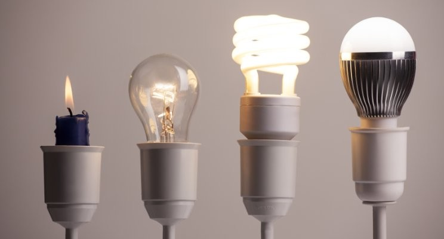
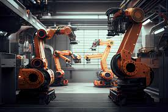

Innovate (verb): to introduce new or improved ideas, methods, or products.
The lightbulb went through many itterations to become to the modern lightbulb as we know it today. It didn't remain satisfactory to have a lightbulb that just produced light. We now have lightbulbs that are safer and more efficient because that status quo was constantly being innovated
Automate (verb): to use machines and computers instead of people to do a job or task.
The lightbulb went through many itterations to become to the modern lightbulb as we know it today. It didn't remain satisfactory to have a lightbulb that just produced light. We now have lightbulbs that are safer and more efficient because that status quo was constantly being innovated
My Portfolio
This part still under construction!
Contact Me
If you'd like to get in touch, please reach out!
Phone: 352-942-9137
Email: honey.logan.t@gmail.com